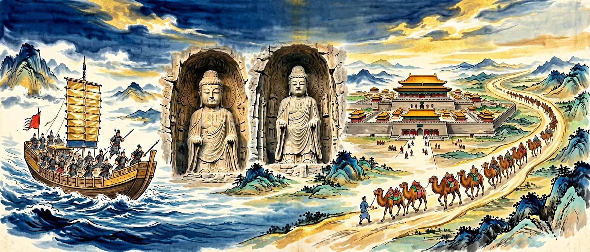

Gallery v2.0.0 · skill v7.20
四百年，从三国鼎立到盛唐气象：分裂中孕育交融，交融中重建统一，统一中走向鼎盛。

已经知道：你在初中已学过三国鼎立、隋炀帝开运河、贞观之治等基本史实，能按朝代顺序排列主要王朝。
但问题是：这四百年很容易被记成"朝代流水账"——说不清分裂时期为何孕育着统一的因素，也解释不了科举、三省六部这些制度创新为何能影响后世千年。
所以学：以"分裂中孕育交融、交融中重建统一、统一中走向鼎盛"为主线，用历史地图、制度对比和真实史料，把这四百年读成一条有逻辑的历史脉络。
🎯 能说出三国两晋南北朝时期的主要政权更替顺序
🎯 能分析隋唐时期科举制对社会的深远影响
🎯 能判断唐朝对外开放政策的具体表现及其意义
❓ 为什么三国时期英雄辈出，后来却越来越少了？
❓ 隋朝明明很强盛，为什么只存在了38年就灭亡了？
❓ 唐朝的开放包容具体体现在哪些地方？
学完这一课，这些问题你都能自信地回答。
下列哪项不是北魏孝文帝改革的内容？
唐朝对外交流的典型事件是？
220年曹丕代汉建魏，三国鼎立局面形成。265年司马炎建立西晋短暂统一，316年匈奴攻陷长安致西晋灭亡。
317年司马睿建东晋，北方出现五胡十六国。420年刘裕代晋，南方历宋齐梁陈四朝，北方439年北魏统一。
581年杨坚建隋，589年灭陈完成统一。创立三省六部制，开凿大运河，618年因暴政灭亡。
618年李渊建唐，贞观之治奠定基业。开元盛世达鼎盛，安史之乱后藩镇割据，907年朱温灭唐。
魏晋南北朝政权分立、民族交融与门阀政治并行；北魏孝文帝改革加速汉化。隋唐重建统一，三省六部、科举、均田租庸调等制度成熟，盛唐开放包容，中外交流繁荣，是统一多民族国家发展的高峰阶段之一。
政权脉络：220年曹魏代汉开启三国，280年西晋短暂统一后陷入八王之乱。五胡内迁导致北方十六国混战，南方东晋门阀政治。北魏孝文帝改革促进北朝汉化，南朝士族文化兴盛。589年隋朝终结近400年分裂，隋炀帝暴政速亡。唐承隋制创贞观之治，安史之乱后中央集权衰落。
交融与开发：北魏推行均田制促进北方经济恢复，孝文帝494年迁都洛阳并改汉姓、通婚。北周府兵制融合鲜卑与汉族军事传统。江南地区大规模开发，曲辕犁等农具普及。佛教本土化完成，云冈石窟、龙门石窟体现艺术交融。
制度创新：曹魏创九品中正制，隋唐确立科举制打破门阀垄断。北魏孝文帝实行俸禄制、三长制加强中央集权。隋朝创立三省六部制，唐朝完善科举与律令格式。租庸调制与两税法适应土地关系变化，府兵制向募兵制转型。
盛唐气象：贞观年间确立'中国既安，四夷自服'方针，长安成为国际大都市。开元时期'小邑犹藏万家室'，手工业出现绫锦坊、瓷器坊专业化生产。对外交流活跃，日本遣唐使19次来华，玄奘取经推动佛教传播，波斯、大食商人频繁往来。
And：学生知道魏晋南北朝贵族势力强大
But：为何隋唐科举能打破门阀垄断？
Therefore：理解制度变革如何重塑社会结构
九品中正制到科举制的转变是关键。西晋时'上品无寒门'，比如琅琊王氏家族连续9代出宰相。而隋炀帝创进士科后，唐朝宰相中寒门比例从太宗朝的12%升至武周时的38%。安史之乱后，庶族官员已占中枢要职的57%，像牛李党争中的牛僧孺就是贫民出身。
🌍 就像重点中学保送制度改为统考，原本靠关系的'校董子女'优势消失，普通班学生通过高考逆袭。现在清北农村学生占比变化，就是古代门阀衰落的现代翻版。
下列哪项直接削弱了门阀政治？
And：学生知道北魏是鲜卑族建立的北方政权
But：为何游牧民族统治者要主动放弃本族传统？
Therefore：理解民族交融对统一多民族国家发展的意义
494年孝文帝迁都洛阳，推行穿汉服、说汉语、改汉姓（拓跋改元）、与汉族通婚。颁布均田制将无主荒地分给农民，实行三长制取代宗主督护制。这些措施加速鲜卑封建化，促进北方经济恢复，为隋唐统一奠定基础。
🌍如同现代欧盟各国保留文化特色又采用统一货币，孝文帝在保持鲜卑军事优势的同时吸收汉文化精华。
孝文帝改革直接推动了
And：学生知道唐朝是中国古代强盛王朝
But：为何唐朝能形成空前国际影响力？
Therefore：分析经济文化繁荣与开放政策的关系
贞观之治实行休养生息，推行租庸调制轻徭薄赋。开元时期耕地面积达6.6亿亩，长安城内有东市、西市两大商业区，设立鸿胪寺管理外交。日本遣唐使学习律令制度，新罗模仿唐朝设国学，大食商人经丝绸之路带来伊斯兰文化。
🌍类似当代纽约兼具华尔街金融中心与联合国总部功能，长安同时是政治经济中心与国际文化交流平台。
最能体现唐朝对外开放的是
乱世抓民族交融与区域开发；盛世抓制度创新与对外开放。比较科举与九品中正，说明选官制度变化对阶层流动的影响。
常见误区：常见误区是把魏晋只看成黑暗分裂，忽视民族交融与江南开发。
三省六部制的主要作用是？
1. 错误认为"三国鼎立"是同时存在的三个国家：学生常将魏蜀吴的建立时间混淆，实际上曹魏220年建立时，刘备尚未称帝（221年），孙权更迟至229年才正式建国。这种错误源于对《三国演义》文学叙事的误解，历史事实上三方政权存在时间差近十年，且疆域始终动态变化，如荆州在208年赤壁之战后经历多次易主。
2. 混淆九品中正制与科举制的本质区别：有学生将魏晋的九品中正制视为科举制雏形，实则前者是门阀世族的选官工具（如太原王氏连续九代出任三公），后者在隋唐才打破世袭垄断。错误根源在于简化了选官制度的演变过程，忽略了大业元年（605年）进士科设立才是科举制度化的标志。
3. 高估安史之乱后唐朝的中央集权程度：部分学生认为藩镇割据始于安史之乱（755-763年），事实上代宗时期河朔三镇（成德、魏博、卢龙）仍保持半独立状态，直到唐末黄巢起义（875-884年）后节度使才完全失控。这种误解源于对"开元盛世"与"藩镇之祸"的二元对立认知，未注意到德宗贞元年间（785-805年）朝廷仍能调动部分藩镇兵力。
南朝《世说新语》大量记载清谈内容，说明
对比邺城（曹魏都城）与扬州（唐代商业中心）的兴衰轨迹
先独立作答，再点选项查看对错与错因。
《齐民要术》记载的'耕锄不以水旱息功'反映了当时
敦煌莫高窟第220窟的'维摩诘经变画'中出现中原服饰，这说明
唐玄宗时期粟特人安禄山担任节度使反映
东晋____制度使'上品无寒门，下品无势族'
答案：九品中正
士族垄断选官
隋朝____的创立打破了士族垄断
答案：科举制
选官制度变革
✅ 该时期完成民族大融合，为隋唐统一奠定基础
💡 忽视少数民族政权对中华文明的贡献
✅ 孝文帝改革在5世纪，科举制确立在7世纪隋唐时期
💡 对两次重要改革的时间跨度缺乏概念
口诀：三国分晋南北朝，隋唐一统盛世到
类比：像拼乐高：三国是分散的积木块，隋唐是拼好的壮丽城堡
复制提示词到 AI 学伴，生成「三国两晋南北朝与隋唐」的时间轴或事件提纲；也可以上传你手绘的示意图，请 AI 学伴点评。
复制后可粘贴到 AI 学伴继续对话。
（高考题）隋朝大运河以洛阳为中心，北达涿郡，南至余杭，其主要功能是？
（迁移题）当今公务员考试制度与古代科举制的本质共同点是？
（史实题）唐朝处理民族关系的典型方式是？